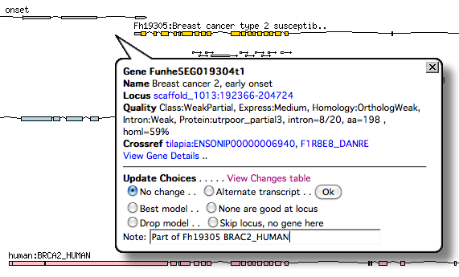

EvidentialGene Annotator Guide
Example for Killifish gene set, 2012-Aug
Killifish gene set, kfish1_best9f 2012-Aug, is generally a good 1st draft set, to go with
the first draft genome assembly. Ortholog gene content is high, in top tier of related
fish genomes, and gene quality is overall good, full length proteins, with much EST and
homology support.
Improving and annotating this gene set involves distinguishing bad from good, where a
majority are good, if not yet perfect models, of the available gene
evidence. Expect some learning time to distinguish mistakes in modeling gene evidence,
by looking at genome map displays, and examples of bad versus good.
Plans for improved Killifish genes
- - another round of computational gene construction and refinement with new evidence, thru 2013 spring,
- a. Genome assembly improvements (joining partial scaffolds, filling some gaps?) will
- b. RNA-seq addition for fuller transcript assemblies and exon joining evidence.
- c. Population genome variation and conservation, as additional gene evidence (coding conservation).
- - incorporate annotator corrections, improvements and notes.
- d. Orthology and functional validation of genes is very helpful to reduce computational
errors.
- e. Expert assessment of genome-wide errors and biases will aid refining next gene set.
Computational methods make mistakes on many genes at a time, so spotting one class of mistake
in a few genes leads to improvements of many.
- f. Lists of gene families or classes that have many errors can be used to improve others
of the class, eg. very long proteins are often fragmented, short but true genes may be missed,
and some classes like weakly expressed or repetitive-protein genes may be subject to more errors .
Common gene model errors
- - fragments or splits : parts of 1 gene, often complete protein, commonest problem in 1st draft
gene sets
- - fusions or joins : 2 genes, or more, as one. Rarer but depends much on evidence,
commonest where genes are packed closely. May have aberrant long UTR that is 2nd gene;
- - gaps in genome hide exons, etc. Denovo RNA/EST assemblies can cover gap, otherwise
no good solution.
- - end of scaffold genes; can be corrected from split in RNA/EST reads/denovo asm, or
split of strong ortholog protein mapping.
- - missing exons or mistaken exon/intron joins; rare with current gene modeling software,
exons are usually accurate; for areas lacking EST or prot evidence they are guess but
CDS-exons are relatively easy to find correctly.
- - disagreement of evidence, esp. mapped ortholog proteins vs mapped EST exons. Judgement
depends on strength of evidence. Where native EST/RNA evidence is strong / complete, this
outweighs alien proteins.
Identifying problems
- - Inspect genome map for all evidence: mapped proteins, introns from EST/RNA, EST/RNA
assemblies, EST/RNA reads. Does gene model match either majority or one of stronger
evidence lines?
Killifish GBrowse map Tracks, below map. View these evidence, prediction tracks to help decide.
Genome features
x Introns : best to see if exons are joined by EST reads
x EST asm.PASA : genome EST assembly
x EST asm.Newbler : denovo EST assembly
x DNA/GC Content : Gaps show as zero content
Optional: EST-reads Transposons Repeats
Protein_Analysis
x Tilapia : best species gene set
x Stickleback x Medaka
x Tetraodon : weakest fish set
x Zebrafish x Human : good reference option: Xenopus
Prediction
x Killifish genes 2012b9 : Current best gene set
x A User Choice : Your corrections show here, but dont show until Update map or move (Display: Cache tracks prevents)
Other prediction models, to replace current model
p AUGepi3 p AUGepir1 p AUGepi9 p AUGepir8 p AUGabi0 p AUGepic5 p AUGpie2 p xmbest7pu
- - Delve into gene families :
- a. missed ortholog genes found in many others. Some have evidence of mapped proteins
but poor gene model.
EvidentialGene/killifish/project/orthomcl/
killifish_miss456.readme.txt
killifish_miss456.otherfish.loci : location table for 900 mapped fish proteins of missed orthologs
These loci can be inspected on Killifish genome map for missing ortholog genes.
- b. too many paralogs, relative to other species. Some are split genes, some are true
new paralogs. Distinguish: split genes have different parts of ortholog, paralogs have
same part or complete ortho-protein. See below example.
- c. protein too big or too small relative to other species: some are fusions or fragments.
EvidentialGene/killifish/project/orthomcl/
killifish_outlier.tootiny.tab (~500)
killifish_outlier.toobig.tab (~100)
- - Long and short proteins have more errors:
- Long (10,000+aa .. 1000aa) tend to be split in pieces, esp. if expression is weak,
or with long coding exons (1000s of nt).
- short proteins, under ~60aa, often 1-exon, may be discarded as fragments. Check for missing
orthologs that are short, model may exist.
Resolving problems
- - examine all evidence at locus on genome map(as above). Does gene model match either
majority or one of stronger evidence lines? Gene predictions should not be considered
evidence, but looking at will help.
- - possible splits:
Does split point have evidence from ESTs, esp introns, that span split region?
- likely error 2 fragments of 1 gene
Does split point have deficit of evidence, esp EST, but two models have strong evidence?
- likely correct split of 2 genes
- - possible joins: Does homology score (blast bits) match shorter
ortho genes? Join model will not exceed score of best part. Does
Does EST/intron evidence fail to span likely join? Are introns or
models reversed orientation (rather stupid compute mistake but
happens).
- - gaps in genome: - does denovo EST assembly extend over gap (look
for partially mapped score)?
- - end of scaffold genes: - does longer ortholog protein map there
and to other scaffold (end or middle)? - does denovo EST assembly
map there + other scaffold?
- - disagreement of evidence: weigh strength of evidence for
alternate models. Majority is wrong at times. Expression evidence,
when strong and near complete is likely accurate. Disagreement
may indicate alternate transcripts, esp. for exon joining pattern;
mark likely alternates.
- - Revise chosen best model by picking from available alternates. If
no better model exists, add note of problem. Evigene annotation
system doesn't offer manual revisions, that is joining or splitting
into new models that are not pre-computed. Other annotation
systems such as Apollo do this but are time consuming to learn and
apply.
Annotate locus dialog
Each gene on GBrowse map has click-able information dialog. This includes
- a. Brief summary about gene, Name and quality.
- b. Detailed report in View Gene Details .. link.
- c. Update Choices .. dialog to promote or demote this model.
- d. Table of all updates made by others, with links to location, View Changes table
Examine the Gene Details for further information, including Protein, cDNA sequences,
and homology links.
View the Changes table to see what other problems have been corrected, as examples of what
to look for.
Use this dialog to replace poor models with better, or enter note about any problem.
Choose among the Tracks for Predictions p. AUGepir1 .. AUGepi9, xmbest7pu if they look best, these are
more likely complete models. Or choose EST asm.PASA, EST asm.Newbler assemblies if complete.
Choose a good fish gene if need be to fit best model.
Update choices use [X] at top to cancel
[x] No change . . [ ] Alternate transcript . . [ OK ] to change
[ ] Best model . . [ ] None are good at locus
[ ] Drop model . . [ ] Skip locus, no gene here
Note: [ENTER Your Comments Here]
|

|
Examples
Gene join (easy case: reversed)
Here two reversed genes are joined, as
Funhe5EG000103t1.
Both introns and mapped fish genes show these are reversed genes.
But EST denovo assembly joined these nearby and did not account for reversal, which is
found only with mapping introns to genome.
Similar but harder to spot, un-reversed joined genes occur.
Join or Split? Ambiguous
In this case of possible gene split, the evidence is inconsistent.
Funhe5EG000114t1 and Funhe5EG000115t1 match stickleback, tetraodon and zfish genes,
and EST assemblies. But human, medaka and tilapia models join these two.
Critical to me is that EST expression is strong-ish over two parts, but split middle lacks
joining expression. Orthologs of joiners above may clarify.
toosmall FISH10117 s1013
Example gene,
BRCA2_HUMAN, split at genome gap, has no accurate alternate model.
This was found examining "tootiny" orthologs, from
EvidentialGene/killifish/project/orthomcl/killifish_outlier.tootiny.tab
toobig FISH10096 addalt_s567
This is a case Funhe5EG013406
from killifish_outlier.toobig.tab of a bigger Killifish protein than orthologs.
Inspection of genome map says the current model is likely accurate, not a join, as introns and EST support the
joining of all exons. However a shorter alternate transcript exists and matches other fish genes.
Too many paralogs
A killifish gene family with more paralogs than other fish may include fragment genes.
Inspecting these gene familys will find some have fragments and some true paralogs.
One way to find such groups is with the below search of gene groups. You can also reverse this
search, for groups with too few killifish paralogs, then hunt for the missing paralog with
blast or genome map search of other fish gene IDs.
EvidentialGene/killifish/project/
Search gene families,
>Limit to genes in these taxa: Fish: 1 or 0
>Limit to genes in these species: Killifish: 2+
Search for Vertebrata with above constraints : No. matches = 1225
Ignore: ntaxa below 4, and 274 groups remain.
Or use this search link
Look at gene group page of these others.
If killifish gene IDs are consecutive (or nearly), they are next to each other, and may be splits.
E.g. FISH8_G2208 Toll-like receptor 2,
Funhe5EG021539t1, Funhe5EG021540t1
These are NOT splits, but 2 true paralogs, as each matches complete tilapia/medaka genes
that have two mappings.
E.g.
FISH8_G2508 Vertebrate protein tyrosine phosphatase,
Funhe5EG000402t1 .. 403t1 .. 404t1
These are 3 parts of 1 gene. Expression ESTs only exist for middle part, but all mapped proteins
cover all 3 parts, and orthology indicates these kfish genes are too short.
Plectin paralogs : big gene problems
There are more Plectin, or
FISH8_G231 Microtubule-actin crosslinking factor,
paralogs for Killifish than others. This is a big gene, 7000 aa per paralog.
Most of the putative 4 common vertebrate paralogs are split for Killifish, at these 4 locations.
The 2nd, plectin3_q_sc759, looks complete but fragment alternate exons exist in middle.
locus P1: many fragments, corrected w/ other model
|
locus P2: accurate full gene, with alternate exon fragments
|
locus P3: two big parts, no full model, alternate p-AUGepi9 covers most of gene
|
locus P4: two big parts, could be 2 genes, evidence disagrees
|
Extra credit
There are other gene family searches that pull out interesting Killifish groups.
Of interest are those families with no other fish species, and without good functional
information. While the largest of such tend to be uninteresting Transposon groups,
there is one very intriguing group of 99 Killifish genes. You can find this
with the below Orthomcl family search
EvidentialGene/killifish/project/
Search gene families,
>Limit to genes in these taxa: Fish: None
>Limit to genes in these species: Killifish: 2+
Search for Vertebrata with above constraints : No. matches = 829
That group FISH8_G28
at top has 99 Kfish genes, and my inspection of ~10 shows EST expression, without transposon overlap.
There is some weak homology for some of these. Can
anyone win the prize of determining a family function for this large group, from those
weak homologies or other analyses? A zinc finger motif is most common of the weak homologs.
Looking at the Funhe IDs, they occur in tandem clusters of 2-3 paralogs, but do not appear to
be fragments of longer genes.
Other groups of uniquely killifish genes from above may include Transposon genes yet to be assigned.
Check for expression, some other groups are killifish expressed, such as FISH8_G321 with 31 paralogs.
{kind=link}
{kind=link}
{kind=link}
{kind=link}
{kind=link}
{kind=link}
{kind=link}
{kind=link}
{kind=link}